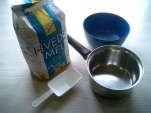
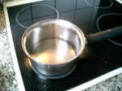
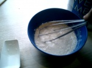
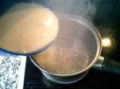
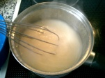
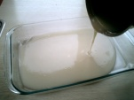

Wheat paste
From PyroGuide
|
Wheat paste refers to a kind of glue made by mixing a flour-like substance with water. However it's not real flour, and the powder must be bought. Wheat paste can also be made at home using the following instructions, where flour is boiled in water to release the gluten from the flour. Simply mixing flour with water will not work as well. In pyrotechnics, wheat paste is mostly used to paste shells or bind stars. It works well and is very cheap, however the downside is that it gets old and smell after just a few days, so you will need to make it as you need it. The durability can optionally be extended by adding a small amount of toxic powders or changing the pH of the wheat paste. |
[edit] Materials Ingredients Other Optional |
[edit] Method Start by measuring out three parts of water by volume, and pour it in to the pot. Let the pot of water heat over the stove until it boils. |
|
 While the water is heating up, mix three parts of cold water with one part of flour by volume in a bowl. For instance if you boiled 150 ml of water, you must now mix 150 ml of water and 50 ml of flour. It must be mixed thoroughly until it looks like milk. |
|
 When the water is boiling in the pot, slowly add the mixture from the bowl into the pot and stir. |
|
 Stir until you have achieved the desired viscosity and take the pot off the stove. If there are any lumps in the wheat paste at this point, pour it through a strainer to separate the lumps from the paste. |
|
 The paste is now finished and can be used as it is, however the paste is hot. To cool the paste rapidly, transfer it into a baking pan. The paste is then stored in a container with a lid. You will need to throw the paste away 1-2 days after you have made it, since it will start to smell bad. To extend the durability of the wheat paste, a few teaspoons of vinegar can be added while boiling the paste. Paris green or sodium salicylate in powdered forms can also be added, however vinegar is both easy to obtain and non-toxic. Another way to extend the durability is to put it in the refrigerator and make it boil a little before using and/or every 2 days in the microwave. The microwave is a good way to kill microorganisms because of the heat (however the microwave radiation itself is non ionizing and does not kill bacteria or fungi), the paste can be stored for a week or more this way. |
- Pudi Amateur Pyrotechnics - http://www.pudi.dk

{kind=link}
{kind=link}
{kind=link}
{kind=link}
{kind=link}
{kind=link}